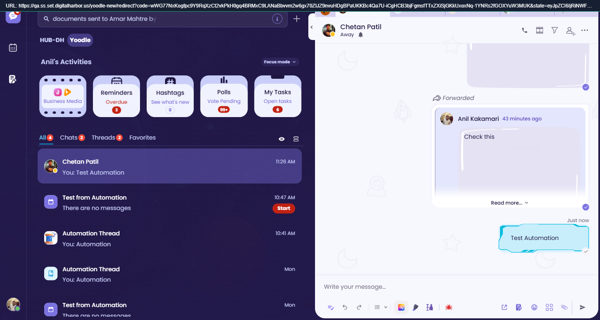
Check 01
Text message
A normal message was sent successfully in the chat.
Easy-to-understand test summary
The automated check opened Yoodle Chat, signed in, found the person Chetan Patil, and tried the most important ways of communicating.
Watch the entire test from browser launch until the final step.
Select any screenshot to view it at full size.

A normal message was sent successfully in the chat.
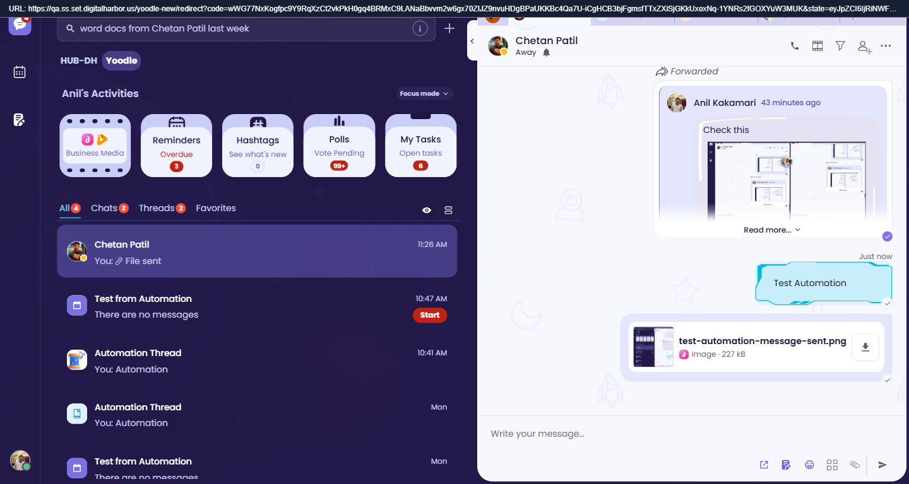
A screenshot was attached to the conversation and sent successfully.
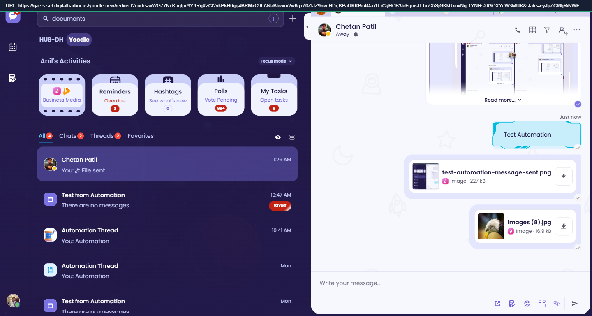
An image was uploaded and sent successfully in the conversation.
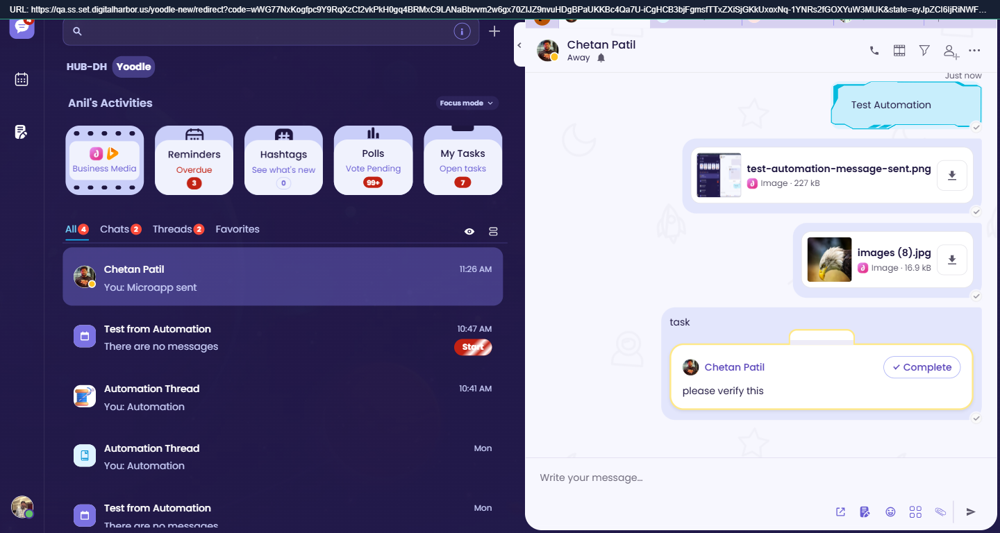
The Task micro app with “please verify this” was created and sent successfully.
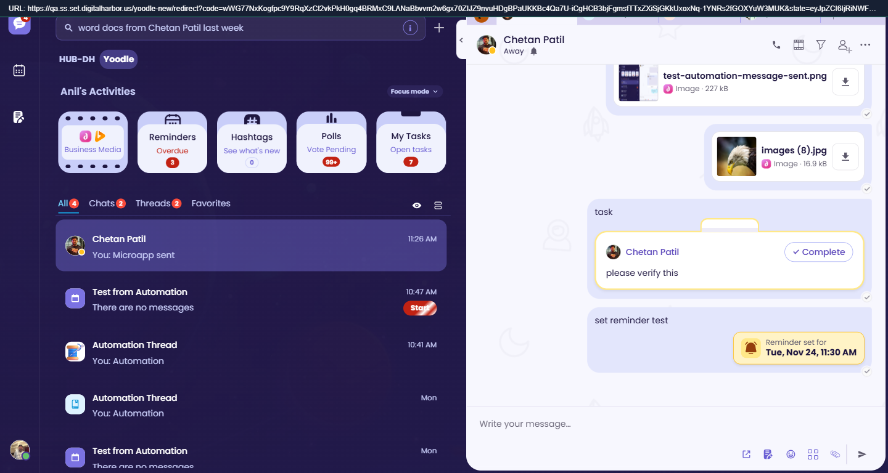
This action was completed successfully during testing.
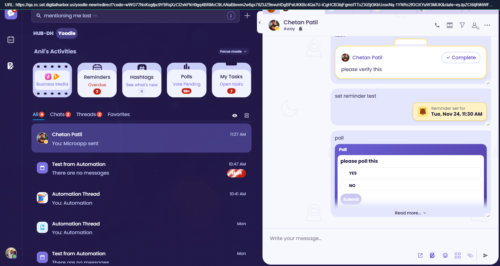
A poll with Yes and No choices was created and sent.

This action was completed successfully during testing.
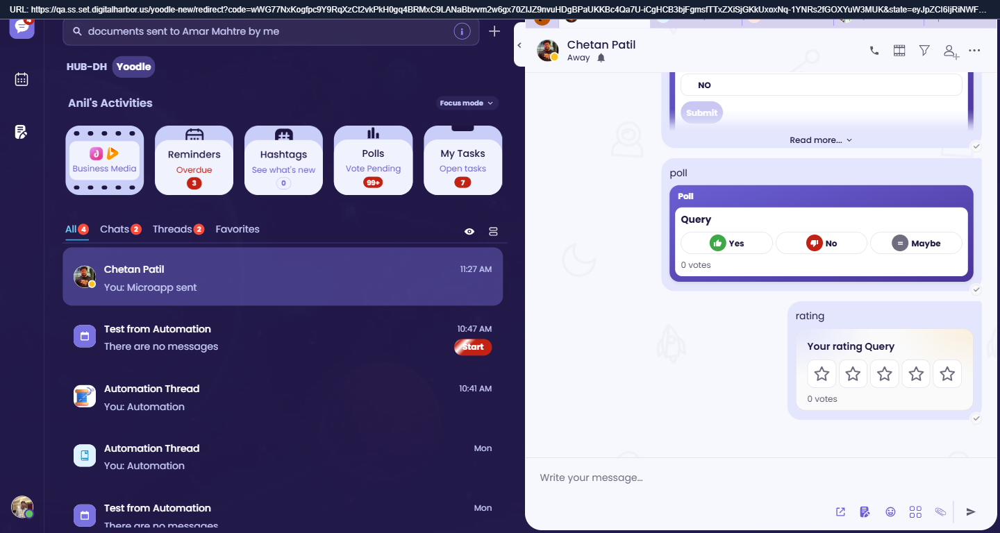
A rating question asking for feedback was sent.
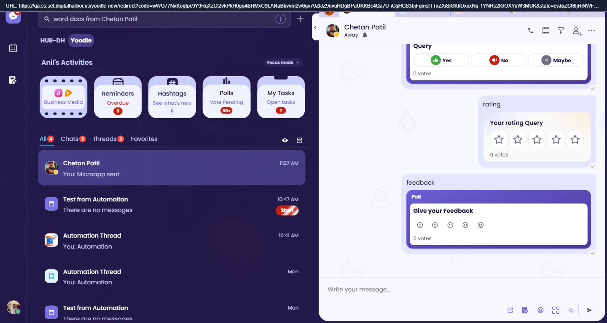
A feedback question was created and sent successfully.
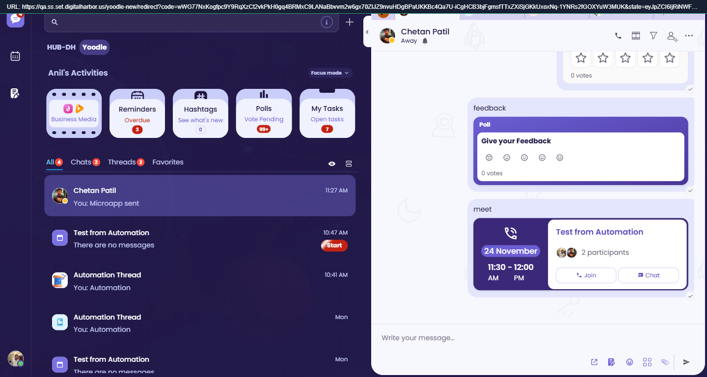
A meeting named “Test from Automation” was created.
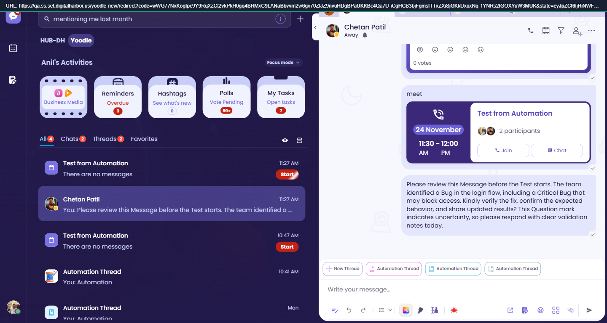
A longer chat message was sent and remained readable.
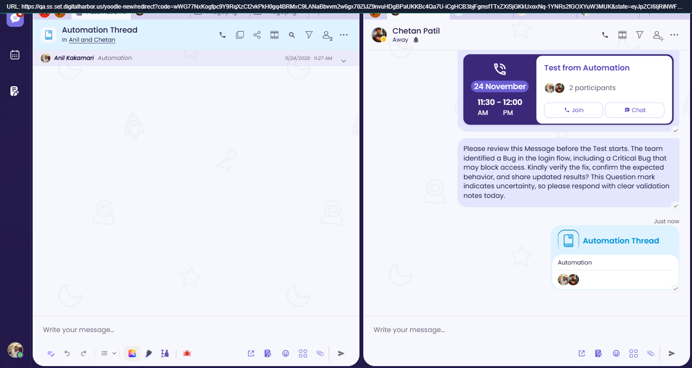
A new thread named “Automation Thread” was created and used.
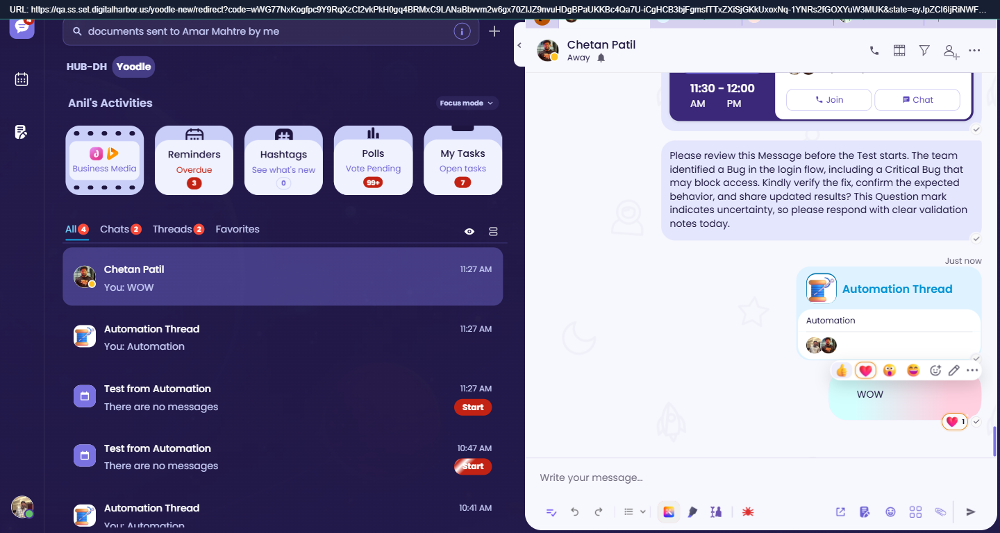
A red heart reaction was added to a chat message.
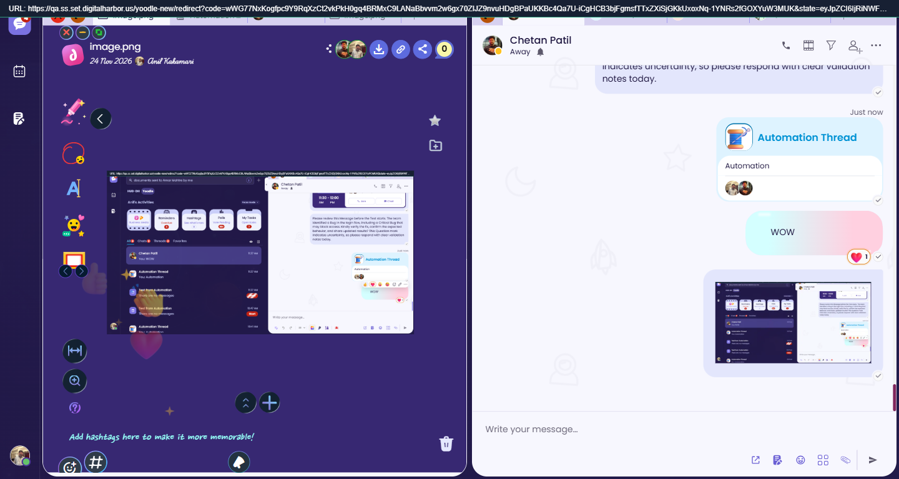
A screenshot was copied and pasted into the conversation.
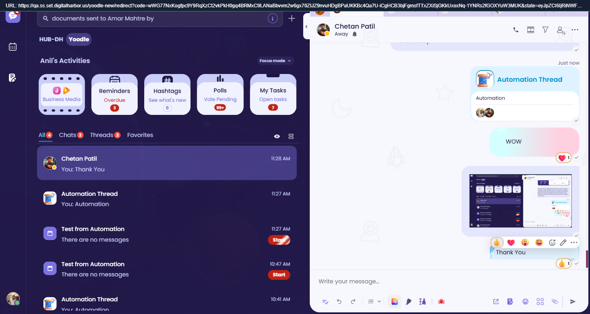
A thumbs-up reaction was added to “Thank You”.
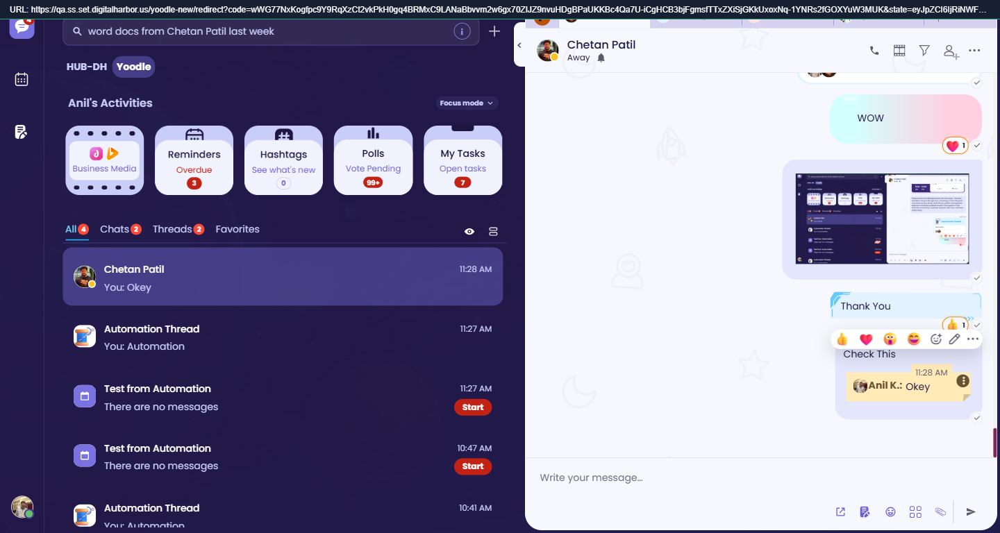
The “Check This” message received the inline reply “Okey”.
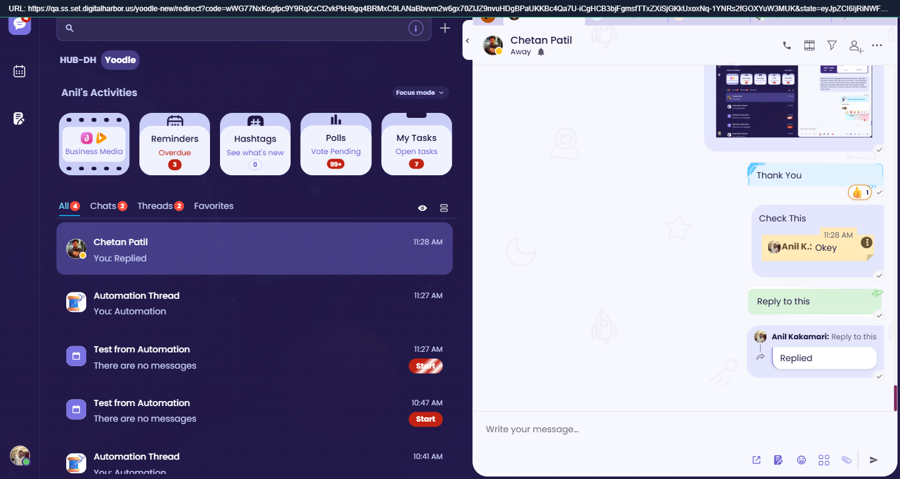
The “Reply to this” message was replied to with “Replied”.
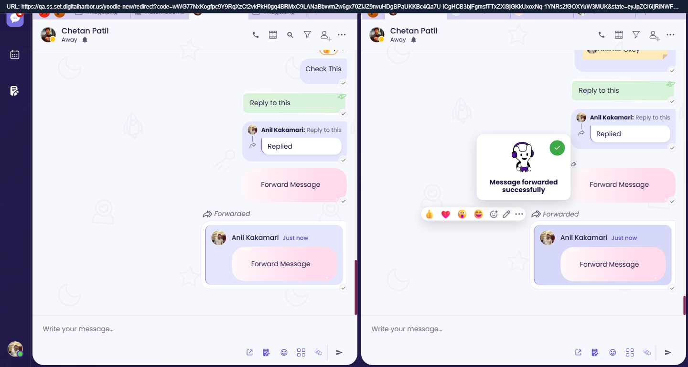
The “Forward Message” text was forwarded to Chetan Patil.
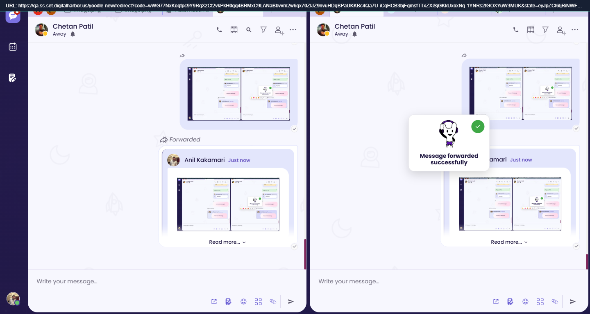
This action was completed successfully during testing.
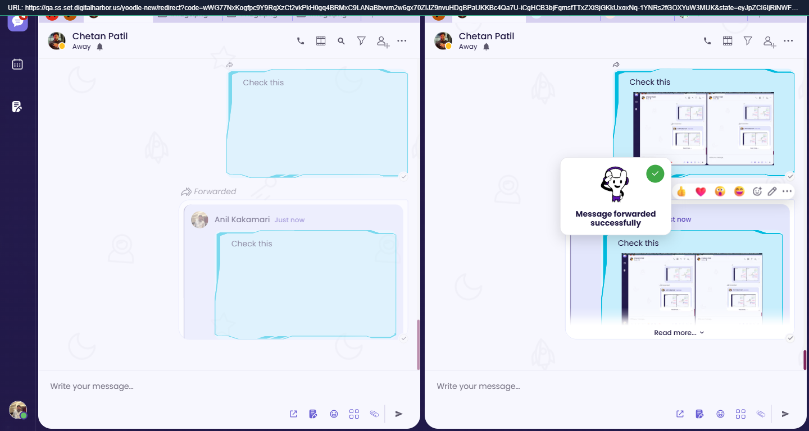
This action was completed successfully during testing.